Thyroid, Calcium & Bone
The neck and the skeleton: thyroid function and nodules, then calcium and PTH, vitamin D and the bone drugs, the bone diseases that aren't osteoporosis, and osteoporosis itself. Warm up with 22 questions to find your weak spots, work through the six topics (the step bar marks the ones you missed), then finish with a 44-question final. Every answer links back to the lecture it came from.
Warm-up quiz
Cold, no notes. It's a diagnostic, not a grade: your score per topic lands on the step bar and tells you where to spend the day.
Thyroid Function
How the hormone is made, what each TSH/FT4 pattern means, splitting thyrotoxicosis by mechanism, and running levothyroxine.
- TSH first. A normal TSH rules out primary thyroid disease, except when you suspect pituitary/hypothalamic disease: then order TSH + FT4.
- Thyrotoxicosis = too much hormone from anywhere. Hyperthyroidism = the gland is making it. Radioiodine uptake splits them: high → reduce production; low (thyroiditis, exogenous) → support only.
- Graves: methimazole first (remission possible). Baseline CBC + liver enzymes + pregnancy test; fever or sore throat = come in now (agranulocytosis). PTU in the first trimester only.
- Levothyroxine ~1.5 mcg/kg/day, half-life 1 week: recheck TSH at 4–6 weeks. Empty stomach, 4 h from calcium/iron. Start low if elderly or cardiac.
- Subclinical hypothyroidism: treat only if pregnant, TSH > 10, anti-TPO positive, or as a symptom trial, and stop the trial if symptoms don't change.
Making the hormone
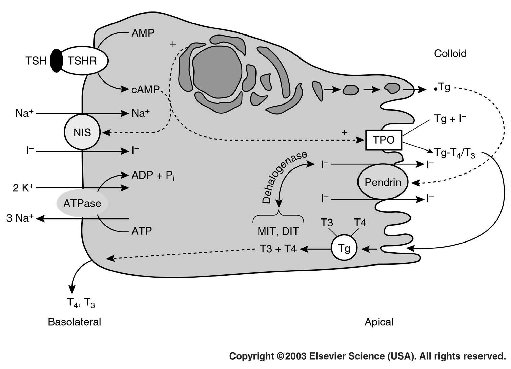
T4 is 90% of what the gland secretes and lasts a week. T3 is 10× more potent and mostly made in the tissues by D2 (T4 → T3). D3 inactivates (reverse T3).
TBG carries most of it. Thyroid hormone raises metabolic rate, heat, heart rate and β-receptor numbers, which is why thyrotoxicosis looks adrenergic.
Same gland, opposite antibodies: Hashimoto anti-TPO blocks synthesis → hypothyroid. Graves anti-TSH-receptor stimulates → hyperthyroid.
Reading TSH and FT4
| Pattern | TSH | FT4/FT3 | Meaning |
|---|---|---|---|
| Primary hypothyroidism | ↑ | ↓ | The gland is failing (Hashimoto by far the commonest) |
| Subclinical hypothyroidism | ↑ | Normal | Usually TSH < 10–20; may resolve on its own |
| Thyrotoxicosis | ↓ | ↑ | Confirm, then find the mechanism |
| Subclinical hyperthyroidism | ↓ | Normal | Not benign: bone loss, atrial fibrillation. Treat if older or TSH fully suppressed |
| Central hypothyroidism | Normal or ↓ | ↓ | Pituitary/hypothalamus. TSH alone misses it |
Thyrotoxicosis: mechanism decides treatment
| Graves | Toxic nodule / MNG | Subacute thyroiditis | |
|---|---|---|---|
| Clue | Woman 30–50, autoimmune family history | Gradual, milder | After a URTI; tender gland, painful swallowing |
| Goitre | Symmetric | Asymmetric, lumps | Variable |
| Uptake | Diffuse ↑ | Focal ↑ | ↓ |
| Treat | Methimazole | Radioiodine | β-blocker + NSAID (steroid if needed); watch for a hypothyroid phase |
| Eye signs | Seen in |
|---|---|
| Stare, lid retraction, lid lag | Any thyrotoxicosis (adrenergic) |
| Proptosis, periorbital swelling, diplopia, visual loss | Graves only. Smoking is the big modifiable risk; visual loss is an emergency |
| Pretibial myxedema, acropachy | Graves only |
| Antithyroid drugs | Radioactive iodine | Surgery | |
|---|---|---|---|
| Used for | Graves first line | Toxic adenoma/MNG; Graves that relapses | Large compressive goitre, suspected cancer, pregnancy intolerant of drugs, refractory storm |
| Watch for | Agranulocytosis, liver injury, birth defects | Permanent hypothyroidism; can worsen Graves eyes (smokers); not in pregnancy | — |
Radioiodine uptake scan: the best single test for the cause, but 2 days and contraindicated in pregnancy. A classic Graves picture (symmetric goitre, eye disease, family history) often needs neither the scan nor TRAb.
Hypothyroidism and levothyroxine
Who to test: compatible symptoms, high cholesterol, anemia, low sodium, autoimmune disease in the patient or family, Down or Turner syndrome, past thyroid treatment, lithium or amiodarone, pregnancy.
Myxedema coma: obtundation and hypothermia, with low BP, slow HR, low sodium and glucose, hypoventilation.
Antibodies and ultrasound rarely change management in overt Hashimoto; ultrasound is for a palpable nodule.
Thyroid Nodules & Cancer
What a nodule can be, why a needle can't call a follicular lesion, and the four cancers by cell of origin.
- A nodule is hyperplasia (multinodular goitre, the commonest), inflammation (Hashimoto) or neoplasm. Most are benign and most patients are euthyroid.
- Follicular adenoma vs carcinoma = invasion of the capsule or vessels. The cells look identical, so FNA can't tell them apart; the excised nodule can (hemithyroidectomy).
- Papillary (85–90%): diagnosed on nuclear features, which FNA sees well. Lymphatic spread (a neck node can be the first sign), multifocal, excellent prognosis.
- Follicular spreads by blood (bone, lung). Both differentiated cancers take up radioiodine and are followed with thyroglobulin.
- Medullary = C cells: calcitonin, amyloid, RET point mutation, 25% MEN 2 → exclude pheochromocytoma before surgery. No iodine uptake. Anaplastic: older patient, fast-growing mass, usually unresectable.
The four cancers
| Papillary | Follicular | Medullary | Anaplastic | |
|---|---|---|---|---|
| Cell | Follicular | Follicular | C cell | Follicular (dedifferentiated) |
| Diagnosed by | Nuclei (FNA works) | Invasion (needs the whole nodule) | Nests, amyloid, calcitonin | Sheets, no follicles |
| Spread | Lymph → neck nodes | Blood → bone, lung | Frequent metastasis | Local invasion of the neck |
| Radioiodine | Yes | Yes | No | No (external beam) |
| Follow with | Thyroglobulin | Thyroglobulin | Calcitonin | — |
| Genes | BRAF, RET-PTC translocation | RAS (like adenoma) | RET point mutation | BRAF (inhibitor option) |
| Outlook | Very good | Good | Stage-dependent | Often lethal |
What the pathologist sees
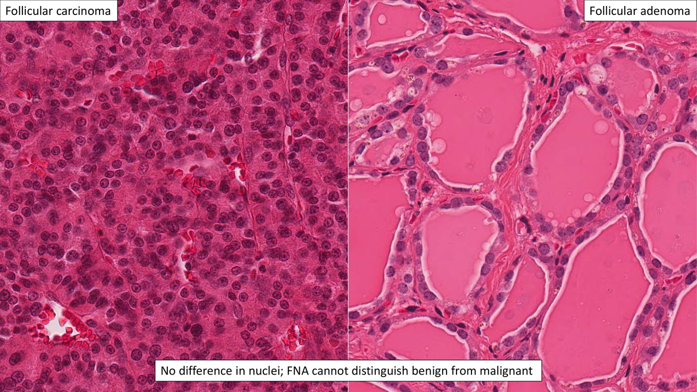
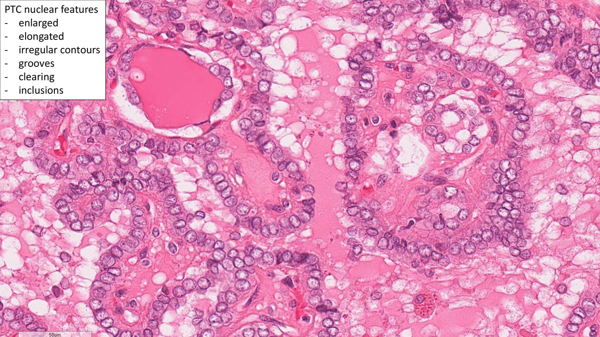
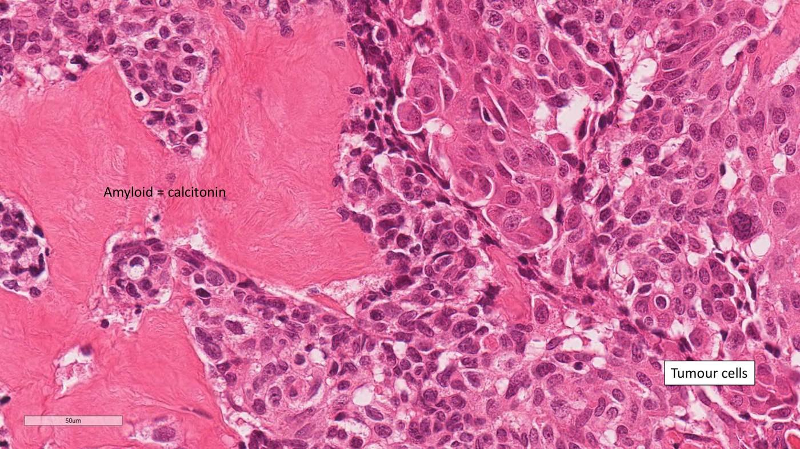
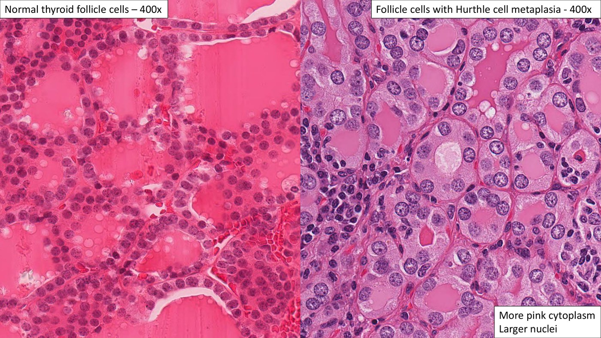
The benign look-alikes
| Clue | Trap | |
|---|---|---|
| Multinodular goitre | Nodules of different sizes and activity; cysts, bleeding, fibrosis, calcification | Operate only if symptomatic, worrisome on US/FNA, growing or disfiguring |
| Graves | Diffuse hyperplasia, papillary infoldings | Papillary shape without the nuclear atypia is not papillary cancer |
| Hashimoto | Inflammation + Hurthle cells + fibrosis | Can start thyrotoxic (stored hormone leaks out) and can present as a nodule |
| Follicular adenoma | Encapsulated, no invasion, usually "cold" | Cured by hemithyroidectomy |
Treatment: surgery for FNA-positive or suspected cancer > 1 cm (hemithyroidectomy for low risk, total for high risk), node dissection if nodes are involved, radioiodine for high-risk differentiated cancer. Staging pivots on age 55: under 55, a differentiated cancer is stage I unless there are distant metastases (stage II).
Calcium & PTH
The loop, corrected calcium, and the two splits that sort every calcium problem: PTH for high calcium, phosphate for low.
- Corrected Ca = measured Ca + 0.02 × (40 − albumin). Hypercalcemia > 2.55 · admit > 3.0 · IV calcium if < 1.9 with symptoms.
- High calcium → check PTH. High or "normal" = primary hyperPTH (or FHH). Suppressed = malignancy (PTHrP), vitamin D, granulomas. Primary hyperPTH + malignancy = > 90%.
- FHH vs primary hyperPTH = urine. FeCa < 0.01 = FHH (don't operate) · > 0.02 = primary hyperPTH.
- Low calcium → check phosphate. High PO₄ = PTH problem (low PTH = hypoparathyroidism, high PTH = PHP). Low PO₄ = vitamin D problem.
- Treat high: saline → furosemide (only once hydrated) → zoledronate, calcitonin as a bridge. Treat low: IV calcium gluconate, fix magnesium; chronic = calcitriol + calcium, aim low-normal.
The loop
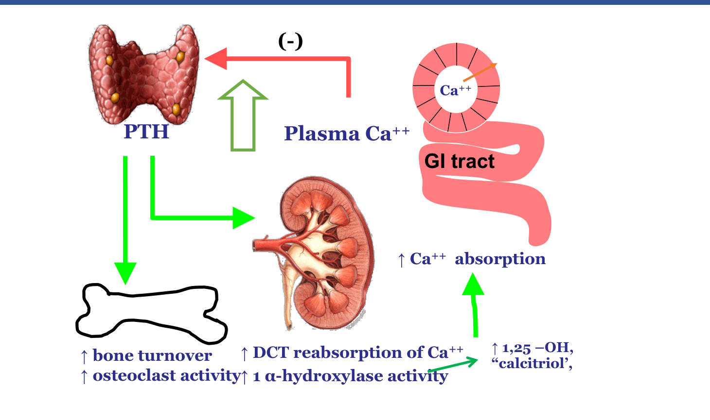
| PTH | Calcitriol | |
|---|---|---|
| Switched on by | Low Ca (CaSR on chief cells) | PTH → renal 1α-hydroxylase |
| Bone | ↑ resorption | Resorption when Ca is needed |
| Kidney Ca | ↑ reabsorption (DCT) | ↑ reabsorption |
| Kidney PO₄ | ↓ reabsorption (wastes it) | ↑ reabsorption |
| Gut | Only via calcitriol | ↑ Ca and PO₄ absorption |
| Net | Ca ↑, PO₄ ↓ | Ca ↑, PO₄ ↑ |
Parathyroids: usually 4, behind the thyroid; chief cells make PTH (full activity in amino acids 1–34). The PTH receptor is shared with PTHrP, which is how tumours cause hypercalcemia. 99% of body calcium is in bone; only the ionized fraction is active.
Corrected calcium
Corrected Ca (mmol/L) = measured Ca + 0.02 × (40 − albumin g/L)
Hypercalcemia: what it does
| "Stones, bones, groans, psych" | Why |
|---|---|
| Stones: kidney stones, polyuria, renal failure | Supersaturated urine; CaSR in the tubule blunts ADH (nephrogenic DI) |
| Bones: pain, cysts, fractures | The resorption driving the calcium |
| Groans: constipation, pancreatitis, vomiting | Less smooth-muscle excitability |
| Psych: confusion, depression | Higher threshold for neuronal firing |
| Heart: short QT, arrhythmia, HTN | Faster phase 2 of the action potential |
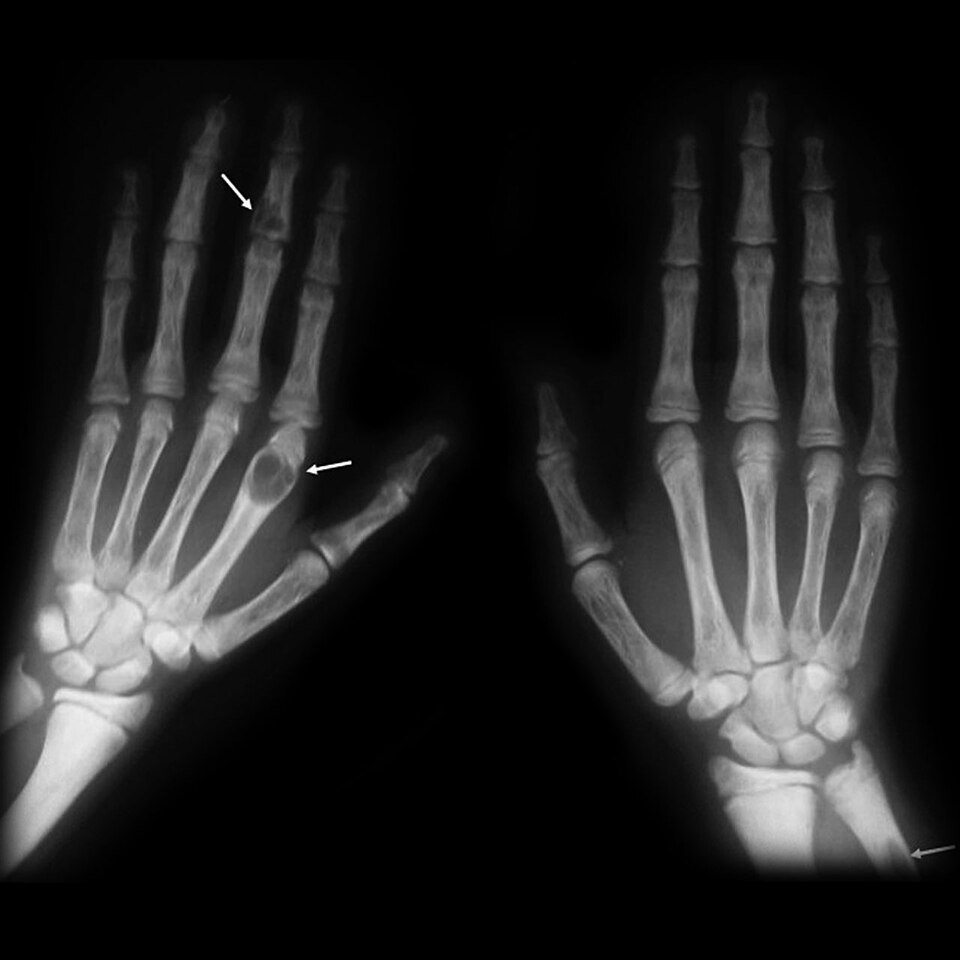
Hypercalcemia: what's causing it
| PTH-mediated (PTH high or "normal") | PTH-independent (PTH suppressed) |
|---|---|
| Primary hyperPTH: adenoma 80%, hyperplasia, carcinoma (rare), MEN | Malignancy: PTHrP (lung, kidney, adult T-cell leukemia), bone mets (breast), myeloma, lymphoma (vitamin D) |
| Tertiary hyperPTH (chronic renal failure) | Vitamin D excess / granulomas (sarcoid, TB make their own 1α-hydroxylase) |
| FHH (inactivating CaSR mutation) | Thiazides, lithium*, immobilisation, milk-alkali, thyrotoxicosis |
FHH vs primary hyperparathyroidism
| Primary hyperPTH | FHH | |
|---|---|---|
| Ca / PTH | ↑ / ↑ or "normal" | ↑ / ↑ or "normal" |
| FeCa (24 h urine) | > 0.02 | < 0.01 |
| Why | Sensing intact, calcium spills | Kidney "thinks" Ca is normal, keeps it |
| Surgery? | If an indication is met | No |
Acute hypercalcemia (admit if corrected Ca > 3)
The calcium has already dehydrated her, and dehydration stops the kidney clearing calcium.
Loop diuretics push calcium into the urine. Never before volume is back.
Shuts off osteoclasts. Definitive, but takes 2–4 days.
Works in hours; tachyphylaxis within 48 h. Not monotherapy.
Suppresses extra-renal 1α-hydroxylase (granulomas, some lymphomas).
Primary hyperparathyroidism: who gets surgery
| Presentation | Plan |
|---|---|
| Mild, asymptomatic, age > 50 | Monitor, or medical: bisphosphonate, denosumab, estrogen, cinacalcet (makes the CaSR more sensitive) |
| Symptomatic, or any indication → | Parathyroidectomy |
| Everyone | Hydrate; stop thiazides and lithium |
- Ca > 0.25 above the upper limit
- T-score < −2.5 (spine, femoral neck, hip, 1/3 radius) or a vertebral fracture
- CrCl < 60 · urine Ca > 10 mmol/day · stones or nephrocalcinosis
- Age < 50
Hypocalcemia: sort it by phosphate
| Cause | Ca | PO₄ | PTH | Clue |
|---|---|---|---|---|
| Hypoparathyroidism | ↓ | ↑ | ↓ / "normal" | Post-neck-surgery ~75%. Permanent only after 6 months |
| Pseudohypoparathyroidism 1a | ↓ | ↑ | ↑ | Kidney deaf to PTH; Albright phenotype |
| Pseudopseudohypoparathyroidism | N | N | N | Same phenotype, hormones fine |
| Vitamin D deficiency | ↓ | ↓ | ↑ | Malabsorption, liver/renal failure, phenytoin, no sun |
Other causes: low albumin (fake), low magnesium (alcohol), pancreatitis (saponification), tumour lysis / rhabdo / sepsis, massive transfusion (citrate).
Albright's: one gene, two diseases
| Inactivating GNAS mutation from… | Result |
|---|---|
| Mother | PHP 1a: the kidney only uses the maternal copy → PTH resistance (often TSH and gonadotropin resistance too) |
| Father | Pseudopseudo-: kidney fine, calcium normal, phenotype only |
| Phenotype: round face, short stature, short 4th/5th metacarpals and metatarsals | |
Hypocalcemia: what it looks like
| When | Findings |
|---|---|
| Acute, severe | Tetany: perioral tingling, carpopedal spasm, laryngospasm, seizures |
| Acute, mild | Chvostek's and Trousseau's signs |
| Chronic | Anxiety, "brain fog", paresthesias, cataracts, dry skin, brittle nails |
| Heart | Long QT (the mirror of hypercalcemia's short QT) |
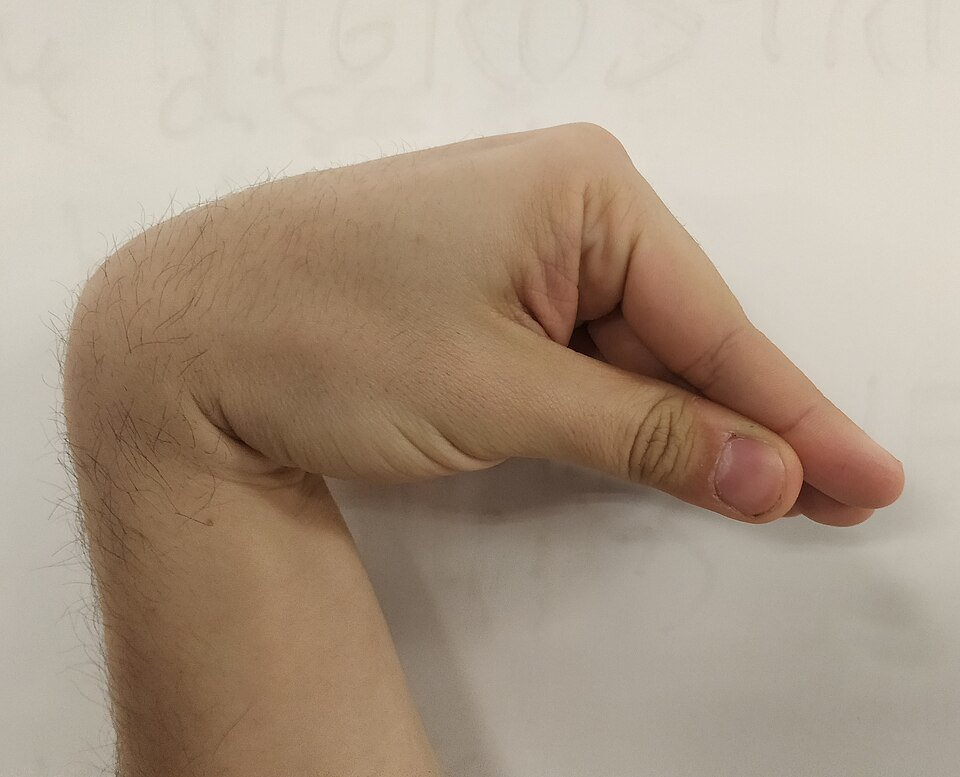
Trousseau's: cuff above systolic for ~3 min → carpal spasm. More specific. Tmdswan, CC BY-SA 4.0, via Commons.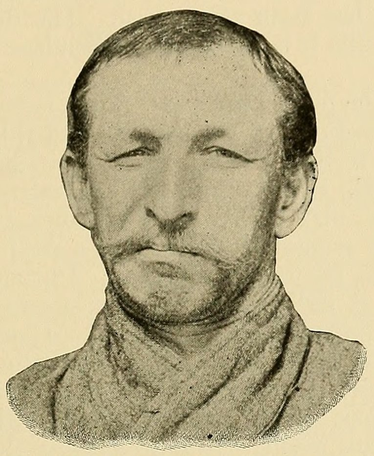
Chvostek's: tap the facial nerve in front of the ear → the mouth twitches. Sensitive, not specific. Loomis & Thompson, public domain, via Commons.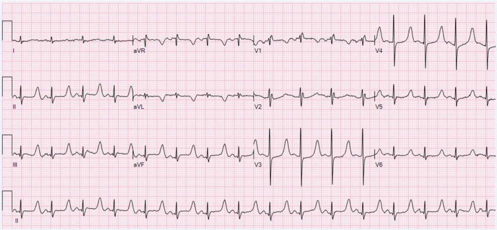
Treating hypocalcemia
| Acute (Ca < 1.9 + symptoms) |
|---|
| IV calcium gluconate 1–2 g of 10% in 50 mL D5W over 15–20 min, then an infusion. Cardiac monitor. |
| Gluconate peripherally; chloride only centrally (necrosis if it extravasates) |
| Check and fix magnesium. No Mg = no PTH release or signalling. |
| Chronic hypoparathyroidism |
|---|
| Calcitriol 0.25 mcg twice daily (target 25-OH-D > 75) |
| Calcium 1–2 g elemental daily, divided |
| Thiazide to cut urine calcium · rhPTH (US/Europe) |
| Aim low-normal Ca; Ca × PO₄ < 4.4. Without PTH, both rise and calcify soft tissue (kidneys, basal ganglia). |
Vitamin D & bone drugs
How vitamin D gets activated, which form you measure and which you give, and the four drug classes side by side.
- Skin/diet → liver (25-hydroxylase) → calcidiol → kidney (1α-hydroxylase, switched on by PTH) → calcitriol, the active form.
- Measure 25-OH-D (calcidiol): long-lived and unregulated. Calcitriol looks normal even when stores are low.
- Kidney can't activate it (advanced CKD)? Give calcitriol.
- Antiresorptive: bisphosphonates (osteoclast apoptosis), denosumab (anti-RANKL). Anabolic: teriparatide (intermittent PTH), romosozumab (anti-sclerostin).
- ONJ and atypical femoral fracture are shared by bisphosphonates, denosumab and romosozumab. Rare.
Vitamin D: make it, measure it, give it
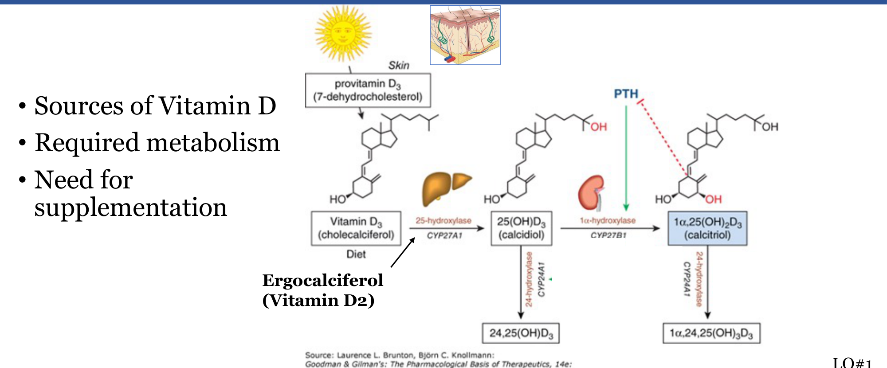
| Form | Still needs | Use it for |
|---|---|---|
| Ergocalciferol (D2) | Liver + kidney | Plant source: the vegan option |
| Cholecalciferol (D3) | Liver + kidney | The usual supplement |
| Calcifediol (25-OH-D3) | Kidney only | Main circulating form (t½ 19 days); 2° hyperPTH in stage 3–4 CKD with low 25-OH-D |
| Calcitriol (1,25-(OH)₂D3) | Nothing | Kidney can't 1α-hydroxylate (advanced CKD), hypoparathyroidism, or when speed matters |
| Calcitriol does |
|---|
| Gut: ↑ Ca and PO₄ absorption |
| Kidney: ↑ Ca and PO₄ reabsorption |
| Bone: resorption when Ca is needed, formation when it's plentiful |
| Too much vitamin D = hypercalcemia |
|---|
| Acute: nausea, vomiting, anorexia, fatigue, weakness |
| Chronic: renal impairment, soft-tissue calcification, hypertension, arrhythmias |
Vitamin D and calcium alone don't meaningfully raise BMD. They're the floor the drugs below are built on.
Where each drug hits the loop
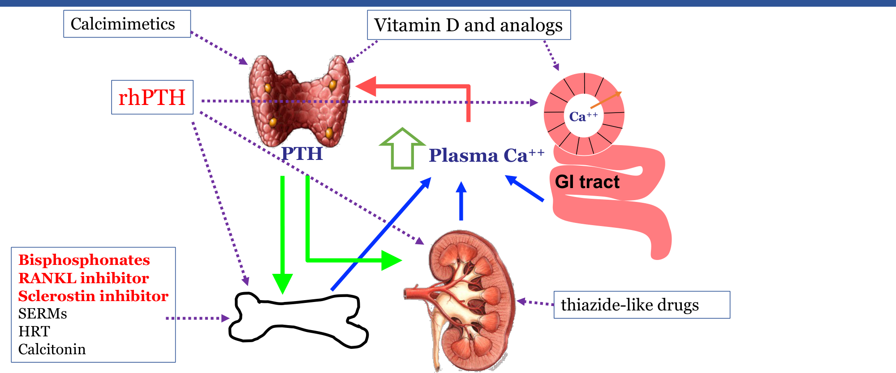
The four classes
| Bisphosphonates | Denosumab | Teriparatide | Romosozumab | |
|---|---|---|---|---|
| Type | Antiresorptive | Antiresorptive | Anabolic | Anabolic (+ antiresorptive) |
| Mechanism | Mevalonate pathway → osteoclast apoptosis | Antibody to RANKL | rhPTH 1–34; intermittent peaks favour formation | Antibody to sclerostin |
| Route | Oral / IV (zoledronate yearly) | SC | SC daily, ≤ 2 years | SC monthly |
| Watch for | ONJ, atypical femoral fracture, GI upset, flu-like (IV) | More ONJ than BPs; infections; rebound bone loss if stopped | Hypercalcemia; osteosarcoma in rats | MI, stroke, ONJ, atypical fracture |
| Avoid if | CrCl < 30; esophageal disease | Hypocalcemia; immunosuppression | CrCl < 30, hypercalcemia, Paget's, unexplained ↑ALP, open epiphyses | Hypocalcemia |
| Kidney | Renally cleared | Not renally cleared | ||
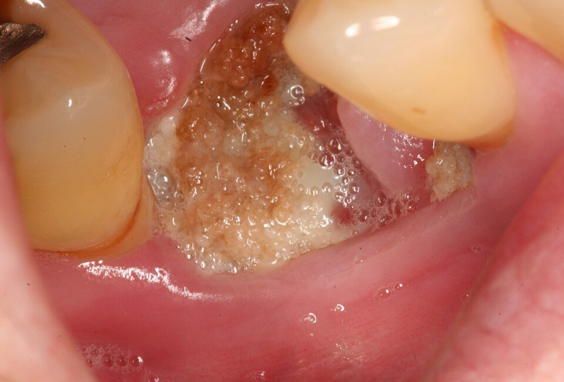
- Same hormone, opposite effect: continuous PTH (hyperPTH) → resorption; daily teriparatide peaks → formation.
- CrCl < 30 rules out bisphosphonates and teriparatide. Denosumab works, but check calcium first.
- Stopping denosumab → rebound bone loss and vertebral fractures.
- Anabolic therapy must be followed by an antiresorptive.
Osteomalacia, Paget's & OI
Three bone diseases that aren't osteoporosis. The labs tell them apart.
- Osteomalacia = matrix that won't mineralise (vitamin D). Rickets if the growth plates are open. ↓Ca ↓PO₄ ↑ALP; Looser zones.
- Paget's = remodelling in overdrive: more bone, worse bone. Very high ALP, normal Ca and PO₄. Warm, vascular. Treat with zoledronate, never teriparatide.
- OI = type 1 collagen (COL1A1/COL1A2). Fractures + blue sclerae, hearing loss, teeth, aortic root. IV bisphosphonates.
- Osteoporosis has normal labs. ALP is the test that says "this isn't osteoporosis".
The one table that sorts them
| Calcium | Phosphate | ALP | Urine Ca | X-ray | |
|---|---|---|---|---|---|
| Osteomalacia | ↓ | ↓ | ↑ | ↓ | Pseudofractures; osteopenic |
| Paget's | N (↑ if immobile) | N | ↑↑ | Expanded, denser; cotton-wool skull | |
| Osteoporosis | N | N | N | N | Thin; fragility fractures |
Osteomalacia & rickets
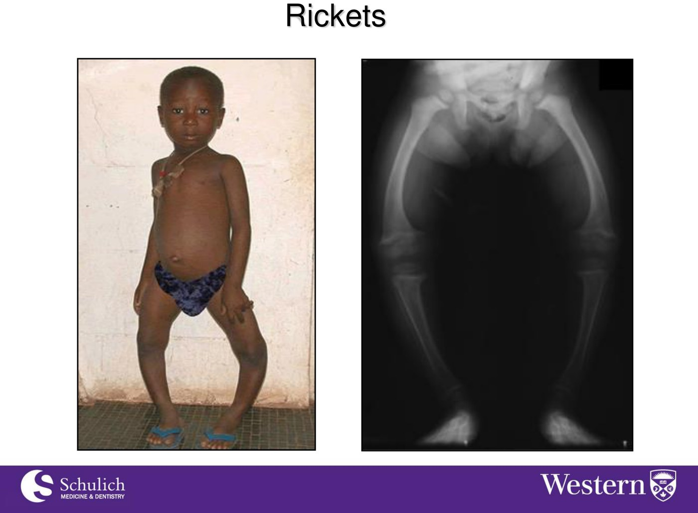
Rickets (growth plates open): bowing, widened frayed metaphyses. Slide from the lecture.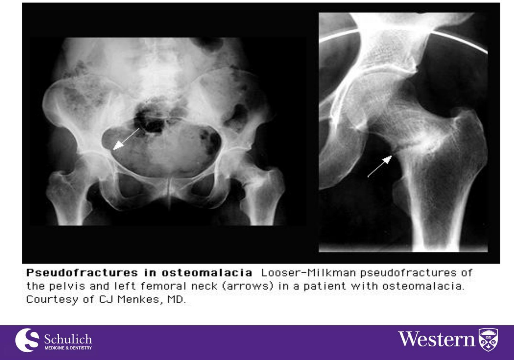
Pseudofractures (Looser zones): lucent bands of unmineralised osteoid, often bilateral. Slide from the lecture (courtesy CJ Menkes).| Four routes to vitamin D deficiency |
|---|
| 1. Less available: no sun, diet, malabsorption (celiac), nephrotic syndrome |
| 2. Liver disease (25-hydroxylation) |
| 3. Renal failure (1α-hydroxylation) |
| 4. Anticonvulsants: enzyme induction speeds breakdown |
| 25-OH-D | Treatment |
|---|---|
| < 30 nmol/L | 50,000 IU ergocalciferol for 12 weeks, then 800–2000 IU daily |
| 30–75 nmol/L | 800–2000 IU daily |
| Recheck in 3 months. Fix the cause (treat the celiac). Add calcium/phosphate if low. | |
Paget's disease
Osteoclasts in overdrive → osteoblasts rush in → bigger, denser, weaker bone. Localised (often multifocal). 5% of people, 10% over 80. Usually found by accident: a high ALP or an X-ray.
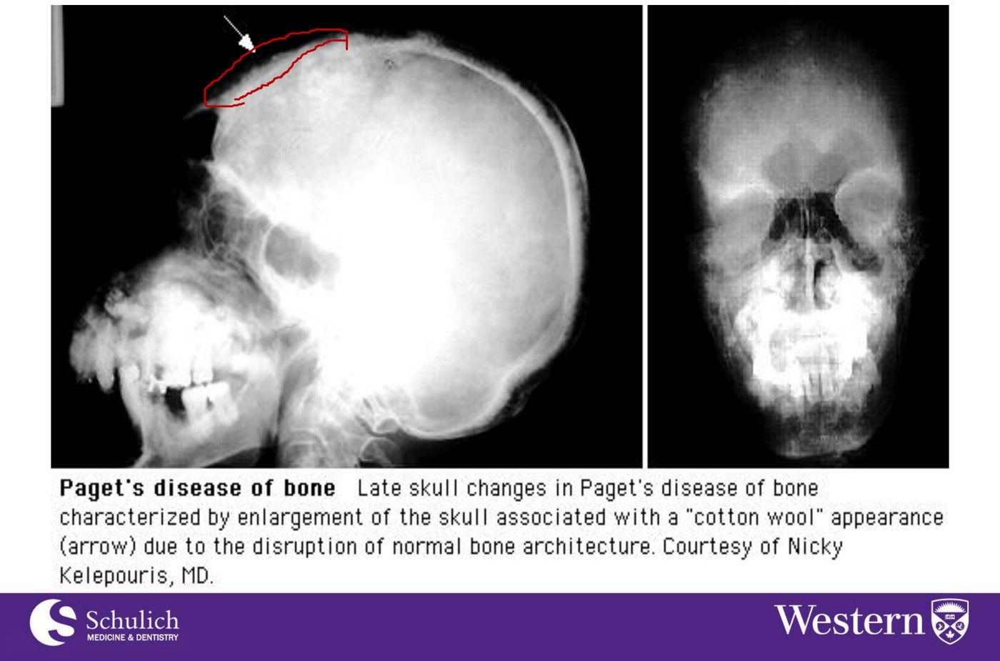
Cotton-wool skull: the vault expands ("my hat doesn't fit"). Slide from the lecture.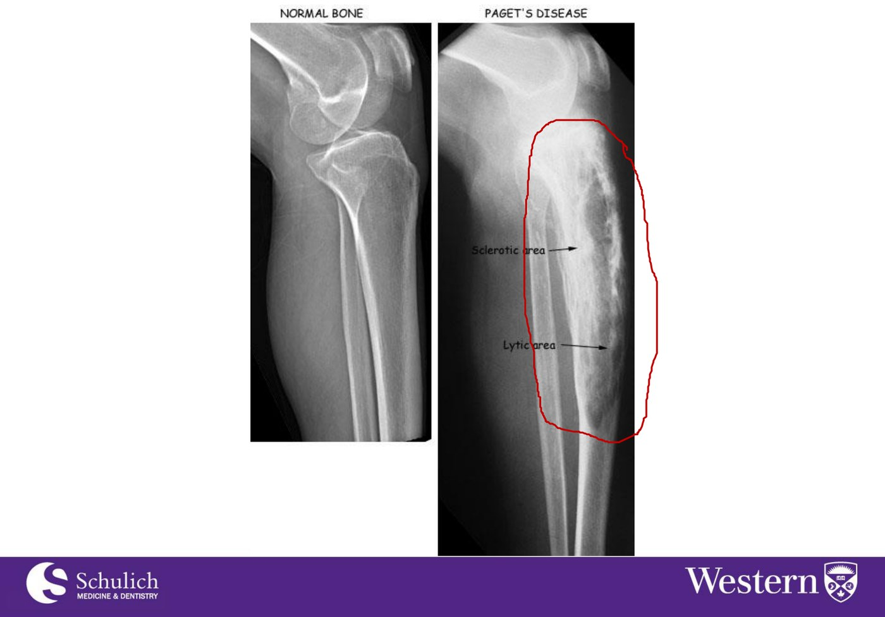
Normal vs pagetic tibia: expanded, bowed, thick cortex, denser. Slide from the lecture.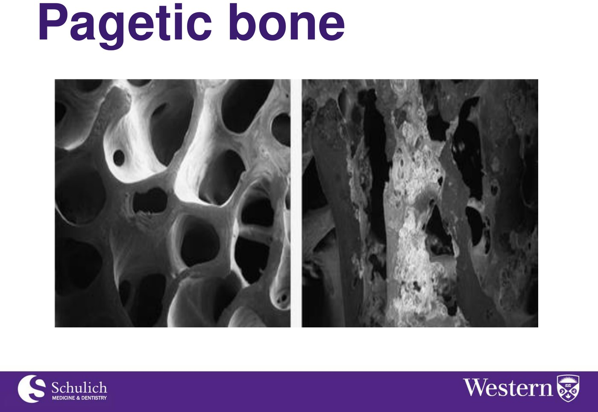
Normal vs pagetic trabeculae: more bone, worse bone. Slide from the lecture.| Complication | Why |
|---|---|
| Fractures | Abnormal, fragile bone |
| Hypercalcemia | Only if immobile |
| Deafness / cranial nerves | Skull narrows the foramina |
| Cord compression | Expanded vertebrae |
| Osteosarcoma (1–3%) | New pain + lytic lesion + rising ALP |
| High-output heart failure | Vascular bone acts as a shunt |
| Osteoarthritis | Deformed bone next to a joint |
| Treatment |
|---|
| Zoledronate (IV, first-line) · calcitonin as an alternative · analgesia |
| Treat even if asymptomatic when active disease is in the skull, long bones, spine or next to a joint; before surgery at a pagetic site (bleeding); or with heart failure |
Osteogenesis imperfecta
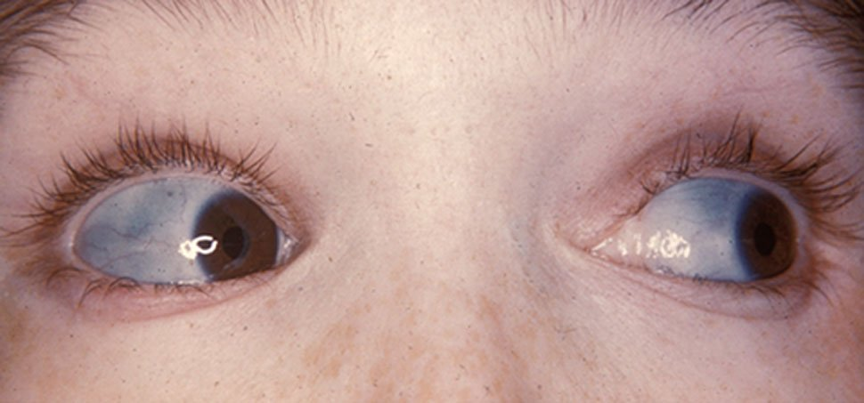
Blue sclerae: thin collagen lets the choroid show through. Fred & van Dijk, CC BY-SA 3.0, via Commons.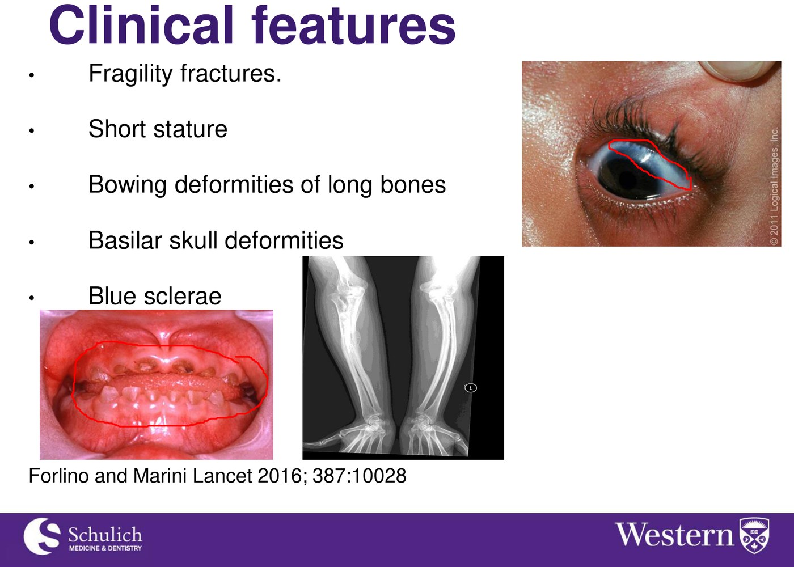
Fragility fractures, short stature, bowing, basilar skull deformity, blue sclerae. Slide from the lecture (Forlino & Marini, Lancet 2016).| OI in one table |
|---|
| COL1A1 / COL1A2 (type 1 collagen), 85–90% · 1 in 15,000–20,000 |
| Beyond bone: hearing loss, dentinogenesis imperfecta, aortic root dilatation and valve leaks, wormian bones, pectus |
| Treat: IV bisphosphonates for long-bone deformity, vertebral compression fractures, or > 3 fractures/year |
| Prognosis: type 1 normal lifespan; type 2 lethal around birth |
| Lifelong monitoring | How often |
|---|---|
| Hearing, BMD, ECG + echo | Every 2 years |
| Skeletal X-rays | Every 1–2 years |
| Spirometry | Yearly |
| Growth, head circumference, neuro (basilar invagination) | Ongoing / as needed |
Osteoporosis
Three ways to diagnose it, who to scan, and the treatment pathway, plus why most people never get treated.
- Any one of three: a fragility fracture · T-score < −2.5 · 10-year fracture risk > 20%.
- T (vs a young adult) makes the diagnosis. Z (vs your age) flags a secondary cause.
- 15% are treated after a fragility fracture vs 80% on a beta blocker after an MI. 29% are dead a year after a hip fracture.
- Bisphosphonate first. Anabolic first only for severe/multiple vertebral fractures with T ≤ −2.5, always followed by an antiresorptive.
Diagnosis: three doors
| Door | Criterion | Catch |
|---|---|---|
| Clinical | Fragility fracture | Not skull, hands, feet, ankles, or real trauma. Wrist or hip from standing height counts. |
| Densitometric | T-score < −2.5 | Most people who fracture are above it |
| Risk-based | > 20% 10-year major fracture risk | FRAX (preferred) or CAROC |
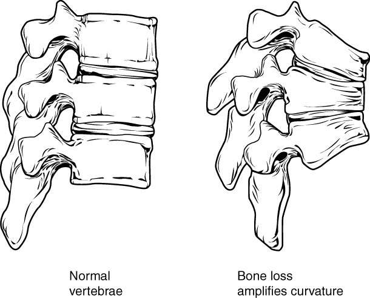
Vertebral fractures → wedging → kyphosis. Often silent. OpenStax A&P, CC BY 3.0, via Commons.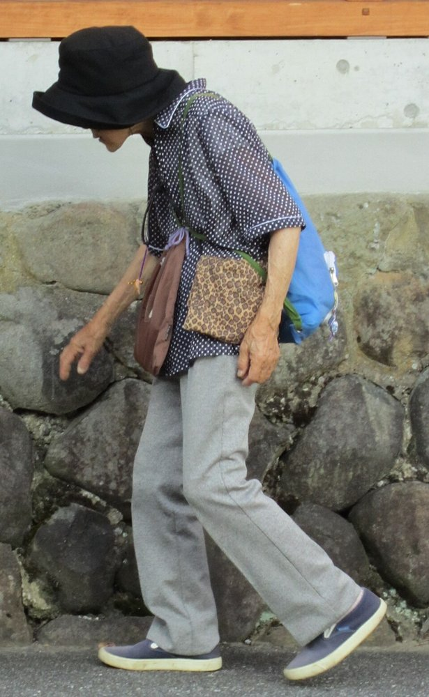
The end stage: accumulated vertebral fractures. James Heilman MD, CC BY-SA 3.0, via Commons.T vs Z, and who gets scanned
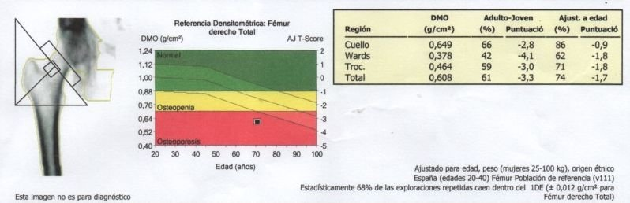
| Compares you with | Use | |
|---|---|---|
| T-score | Young adult at peak bone mass | Diagnosis (< −2.5) |
| Z-score | Your own age and sex | Low = secondary cause |
| Age | Scan if |
|---|---|
| ≥ 70 | Everyone |
| 65–69 | 1 risk factor |
| 50–64 | Prior fracture or ≥ 2 risk factors |
| Bloods | Why |
|---|---|
| Corrected Ca | HyperPTH, malignancy; fix low Ca before an antiresorptive |
| CBC | Myeloma |
| Creatinine | Bisphosphonates need CrCl ≥ 30 |
| ALP | Paget's, osteomalacia, metastases |
| TSH | Thyrotoxicosis |
| 25-OH-D | Correct alongside treatment |
The treatment gap
| After a hip fracture | |
|---|---|
| Dead at 1 year | 29% |
| Can't walk independently at 1 year | 40% |
| Can't do more than one IADL | 80% |
| Lifetime hip fracture risk, age > 50 | 12.1% |
| Exam sign of vertebral fractures | Threshold |
|---|---|
| Height loss, measured over time | > 2 cm |
| Height loss vs recalled peak | > 6 cm |
| Rib-to-pelvis distance | < 2 finger-breadths |
| Occiput-to-wall distance | > 5 cm |
Treatment
| Everyone | Target |
|---|---|
| Exercise | Balance + resistance training, > 2×/week; falls assessment |
| Calcium | 1200 mg/day (women > 50, men > 70); 1000 mg (men 50–70). From food first; supplements don't help if the diet is enough. |
| Vitamin D | 600 IU (51–70), 800 IU (> 70); at least 400 IU as a supplement |
| Harm | Where | Warning sign |
|---|---|---|
| Osteonecrosis of the jaw | Jaw, after extractions or with poor dental health | Exposed bone, socket won't heal |
| Atypical femoral fracture | Subtrochanteric femoral shaft | New thigh/groin ache, often bilateral |
| Both: bisphosphonates and denosumab, rare, rise with duration → the reason for drug holidays. | ||
Final quiz
44 new questions, mostly clinical vignettes like the progress test. Your results compare each topic with your warm-up.